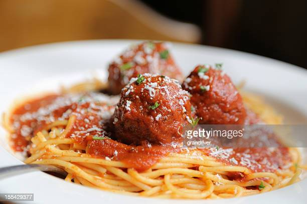

Spaghetti (meatballs not included)

Description
The Noodles
- Boil a pot of water.
- Gauge your noodle quantity by your hunger.
- Add said noodles to boiling water.
- Boil your noodles until al dente (or throw individual noodles at the wall until they start sticking. Cook's choice).
- Set a strainer in the sink. Turn off stove.
- Pour contents of pot into strainer.
- Add noodles back to the pot and add a bit of oil to prevent clumping.
The Sauce
- Add sauce (from a can) to a sauce pan on stove.
- Warm sauce on a low setting.
- Sprinkle in Italian seasoning to taste.
- Turn off stove.
The Consummation
- Add desired amount of sauce to desired amount of noodles and eat it.
Main Page